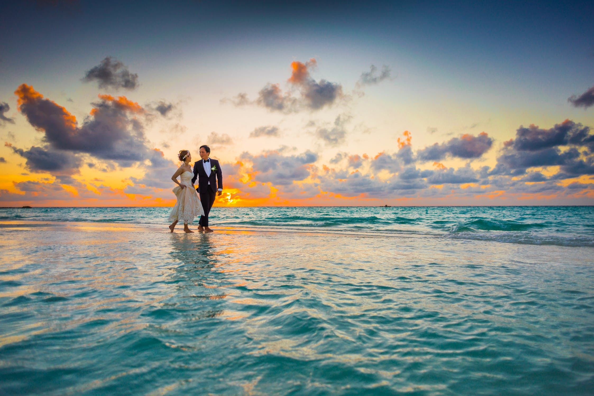

L'AZURE POINTE
A Luxury Resort
MISSION
We are comitted to consistently providing enjoyable recreation, safe environment and memorable vacation experience for every guest and every member of the staff.
VISION
To provide employment opportunities and economic development through tourism and recreation destination.
Reaching out across 40 acres of lush landscaping edged by powdery white sands and crystalline lagoon. L' Azure Pointe represents the epitome of carefree elegance. It's 38 exquisitely designed accomodations feature over-water villas as well as breathtaking beach and garden villas.

L'Azure Pointe is located on a secluded and lush islet in crystal lagoon of El Nido, Palawan. The island is a unique botanical garden with 360 degrees panoramic views of a stunning beaches.

The resort provides variety of amenities and activities including scuba diving, free diving, snorkeling, wind surfing, romantic dinner, island tours and waverunner adventures.

Overlooking the lagoon, this luxury resort offers 3 restaurants and lounges, spa, private helipad and infinity pool. Reachable by boat or plane, this private resort features authentic tropical island experience.